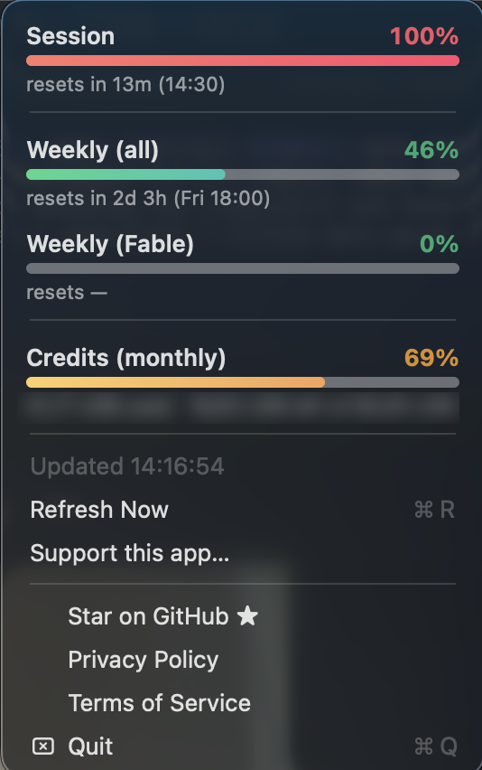

Your Claude Code session and weekly usage, live in the menu bar.
brew tap stavrop/tap brew install --cask usage-monitor-for-claude

Free & open-source (Apache-2.0). Independent and unofficial — not affiliated with Anthropic. Reads the Claude Code login already on your Mac and sends it only to Anthropic.